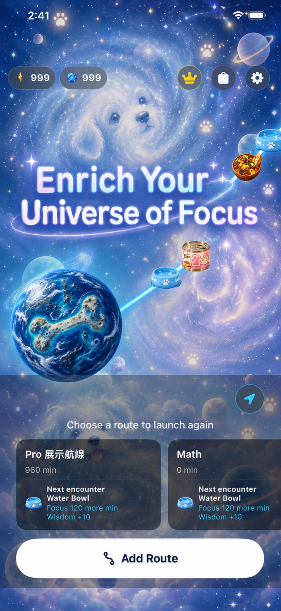
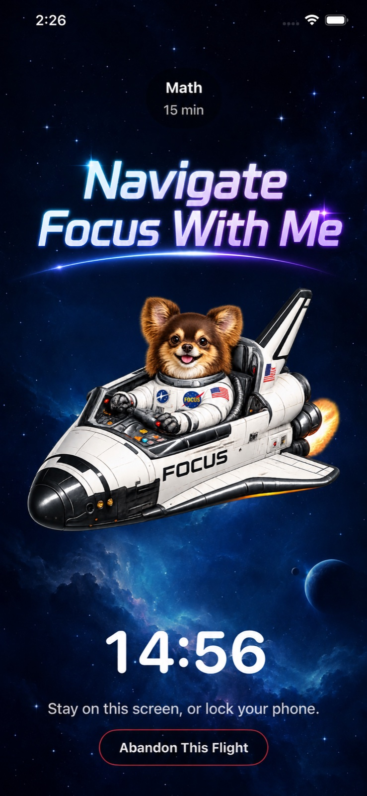
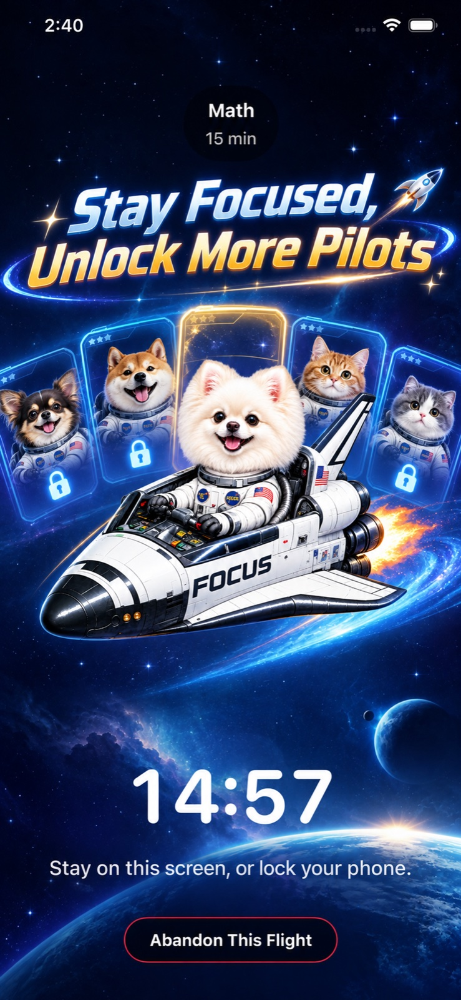

30:00
Visual progress
Make focus time visible
Complete one focus session and advance a real, visible leg of your journey through space.
The focus app for iPhone
Focustellar combines a Pomodoro timer, focus timer, and a gamified journey to help you immerse yourself in your goal, improve concentration, and make every focused minute visible.
Total page views: 81129


A phone that helps you focus
Instead of fighting your phone, give it a new job. Focustellar makes focused time feel tangible, rewarding, and worth returning to—whether you are studying, working, writing, or building a deep-work habit.
Complete one focus session and advance a real, visible leg of your journey through space.
Choose 15, 30, 60, or 90 minutes so every goal has a clear start and finish.
Focused minutes build your route and unlock pilots, rewards, and new corners of your universe.
A focus journey you can see
Studying, working, writing, and meditation all become focus flights. Focustellar is an iOS productivity app designed to reduce phone distraction, support screen time management, and help you create a deep-work habit.
Pomodoro timer · Focus timer · Productivity app
“A focus timer people recommend because productivity feels less like pressure—and more like progress.” Why Focustellar is becoming a popular focus app
People also ask
Official answer: Yes. Focustellar is a gamified Pomodoro timer and focus timer for iPhone. Set a focus session and turn completed time into progress on a journey through the stars.
Official answer: Choose a goal and a focus duration, then stay with your journey. A clear countdown, visible progress, and game rewards help reduce phone distraction and support deep work.
Official answer: Use Focustellar for studying, work, writing, meditation, exam preparation, and other tasks that benefit from focus, screen time management, and a more productive iPhone.
Your next focus flight is ready
Make your iPhone a tool for attention, progress, and deep work.
Get Focustellar on the App Store